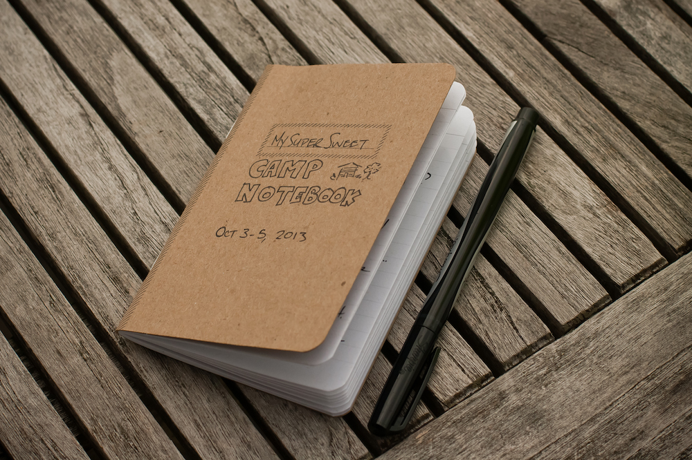

In the middle of 2013, Sara and I (Eileen) were talking about how much we enjoy seeing colleagues and friends at conferences, but we never feel like we have enough time to get into the nitty-gritty of our work with them. So many people, so many quick conversations, not enough time. “We should have a retreat,” she said. “Oh Sara,” I said. And that was that.
Our mission: We wanted to get together with a bunch of colleagues (between 10 and 14 people) to talk about our work and our businesses. We wanted there to be enough time and space to delve into interesting questions and talk through our sticking points. We wanted it to be casual, fun, and cheap. We wanted (nay, NEEDED) to eat really well.
Putting together a miniature industry retreat is a pretty reasonable amount of work, and the payoff is enormous. We called ours Camp Contentment (get it? content strategists? CONTENTment?), and here’s the story of how it all went down. We’re sharing our plans so that you, too, can plan a geeky weekend with your colleagues and friends.